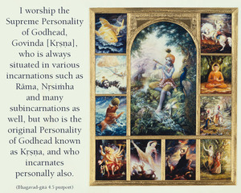
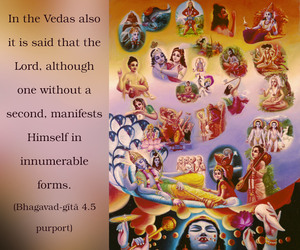
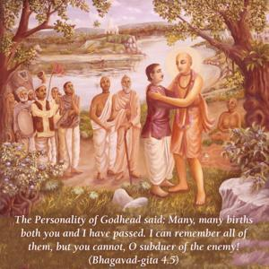

The Personality of Godhead said: Many, many births both you and I have passed. I can remember all of them, but you cannot, O subduer of the enemy!



In the Brahma-saṁhitā (5.33) we have information of many, many incarnations of the Lord. It is stated there:
advaitam acyutam anādim ananta-rūpam
ādyaṁ purāṇa-puruṣaṁ nava-yauvanaṁ ca
vedeṣu durlabham adurlabham ātma-bhaktau
govindam ādi-puruṣaṁ tam ahaṁ bhajāmi
“I worship the Supreme Personality of Godhead, Govinda [Kṛṣṇa], who is the original person – absolute, infallible, without beginning. Although expanded into unlimited forms, He is still the same original, the oldest, and the person always appearing as a fresh youth. Such eternal, blissful, all-knowing forms of the Lord are usually not understood by even the best Vedic scholars, but they are always manifest to pure, unalloyed devotees.”
It is also stated in Brahma-saṁhitā (5.39):
rāmādi-mūrtiṣu kalā-niyamena tiṣṭhan
nānāvatāram akarod bhuvaneṣu kintu
kṛṣṇaḥ svayaṁ samabhavat paramaḥ pumān yo
govindam ādi-puruṣaṁ tam ahaṁ bhajāmi
“I worship the Supreme Personality of Godhead, Govinda [Kṛṣṇa], who is always situated in various incarnations such as Rāma, Nṛsiṁha and many subincarnations as well, but who is the original Personality of Godhead known as Kṛṣṇa, and who incarnates personally also.”
In the Vedas also it is said that the Lord, although one without a second, manifests Himself in innumerable forms. He is like the vaidūrya stone, which changes color yet still remains one. All those multiforms are understood by the pure, unalloyed devotees, but not by a simple study of the Vedas (vedeṣu durlabham adurlabham ātma-bhaktau). Devotees like Arjuna are constant companions of the Lord, and whenever the Lord incarnates, the associate devotees also incarnate in order to serve the Lord in different capacities. Arjuna is one of these devotees, and in this verse it is understood that some millions of years ago when Lord Kṛṣṇa spoke the Bhagavad-gītā to the sun-god Vivasvān, Arjuna, in a different capacity, was also present. But the difference between the Lord and Arjuna is that the Lord remembered the incident whereas Arjuna could not remember. That is the difference between the part-and-parcel living entity and the Supreme Lord. Although Arjuna is addressed herein as the mighty hero who could subdue the enemies, he is unable to recall what had happened in his various past births. Therefore, a living entity, however great he may be in the material estimation, can never equal the Supreme Lord. Anyone who is a constant companion of the Lord is certainly a liberated person, but he cannot be equal to the Lord. The Lord is described in the Brahma-saṁhitā as infallible (acyuta), which means that He never forgets Himself, even though He is in material contact. Therefore, the Lord and the living entity can never be equal in all respects, even if the living entity is as liberated as Arjuna. Although Arjuna is a devotee of the Lord, he sometimes forgets the nature of the Lord, but by the divine grace a devotee can at once understand the infallible condition of the Lord, whereas a nondevotee or a demon cannot understand this transcendental nature. Consequently these descriptions in the Gītā cannot be understood by demonic brains. Kṛṣṇa remembered acts which were performed by Him millions of years before, but Arjuna could not, despite the fact that both Kṛṣṇa and Arjuna are eternal in nature. We may also note herein that a living entity forgets everything due to his change of body, but the Lord remembers because He does not change His sac-cid-ānanda body. He is advaita, which means there is no distinction between His body and Himself. Everything in relation to Him is spirit – whereas the conditioned soul is different from his material body. And because the Lord’s body and self are identical, His position is always different from that of the ordinary living entity, even when He descends to the material platform. The demons cannot adjust themselves to this transcendental nature of the Lord, which the Lord Himself explains in the following verse.